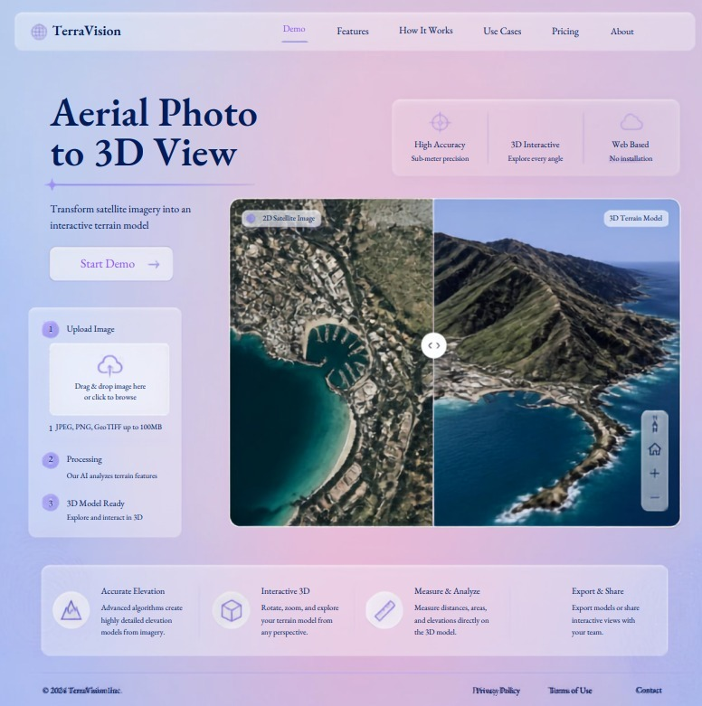

Upload Image
Drag & drop image here
or click to browse
JPEG, PNG, GeoTIFF up to 100MB
Processing
Our AI neural photogrammetry model analyzes multi-frequency terrain relief and depth gradients.
3D Model Ready
Explore, measure elevations, and fly over reconstructed mesh in real-time 60 FPS WebGL.

Single-Photo Input
Reconstruct volumetric height-maps from any standard aerial drone orthophoto or satellite snapshot without multi-angle telemetry.
AI Depth Reconstruction
Multi-frequency neural networks extract fine fissures, ridgelines, and bathymetric water features with sub-meter vertical resolution.
Interactive Flythrough Engine
Experience real-time first-person drone flight with calibrated artificial horizon HUD, custom waypoint paths, and altitude telemetry.
Export & Share
Export production-ready 3D assets in standard OBJ, GLTF, and 16-bit GeoTIFF formats for GIS analysis or CAD software.
2D vs 3D Comparison
Synchronized dual-viewport inspection with coordinate grid alignment and elevation difference overlay.

Altitude / Location
Explore elevation and coordinates